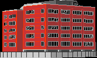
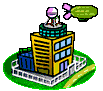

Модем
Сокращение от «модулятор-демодулятор». Превращает цифровые данные компьютера в звук, который можно передать по телефонной линии, и обратно. Тот шум в записи выше и есть данные, только «озвученные».
См. также: V.90 / V.92
 Твой компьютер
Модем
Твой компьютер
Модем
 Телефонная линия
Телефонная линия

АТС
Провайдер Интернет
Интернет
Модем ждёт. Нажми ▶ на плеере, чтобы позвонить.

Пока модем на связи, линия занята. Дозвониться тебе нельзя: у звонящего короткие гудки. А если кто-то дома снимет трубку параллельного телефона, соединение оборвётся.
Платили не за гигабайты, а за минуты в сети. Покупали карточку провайдера, стирали защитный слой и находили логин с паролем для подключения.
Ты в сети: не подключён
 Немного терминов
Немного терминов
Указатель:
Сокращение от «модулятор-демодулятор». Превращает цифровые данные компьютера в звук, который можно передать по телефонной линии, и обратно. Тот шум в записи выше и есть данные, только «озвученные».
См. также: V.90 / V.92
Internet Service Provider, поставщик доступа. Компания, у которой на другом конце провода стоят десятки модемов. Она принимает твой звонок, проверяет логин и пароль и пускает в интернет.
См. также: PPP
Point-to-Point Protocol. Правила, по которым компьютер и провайдер общаются через модем после соединения. На этом шаге проверяются логин и пароль с карточки и выдаётся IP-адрес.
См. также: IP-адрес
Номер компьютера в сети, например 195.34.12.7. При dial-up он обычно был
новым при каждом звонке: провайдер выдавал свободный адрес из своего запаса.
См. также: DNS
«Телефонная книга» интернета: переводит имя сайта (narod.ru) в IP-адрес.
Адреса DNS-серверов провайдера иногда вписывали в настройки подключения вручную.
См. также: IP-адрес
Стандарты модемов на 56 кбит/с, конец 90-х. Как раз их модемы перечисляют друг другу во время «знакомства» в записи выше и выбирают лучший, который умеют оба.
См. также: Модем
Чикиряо